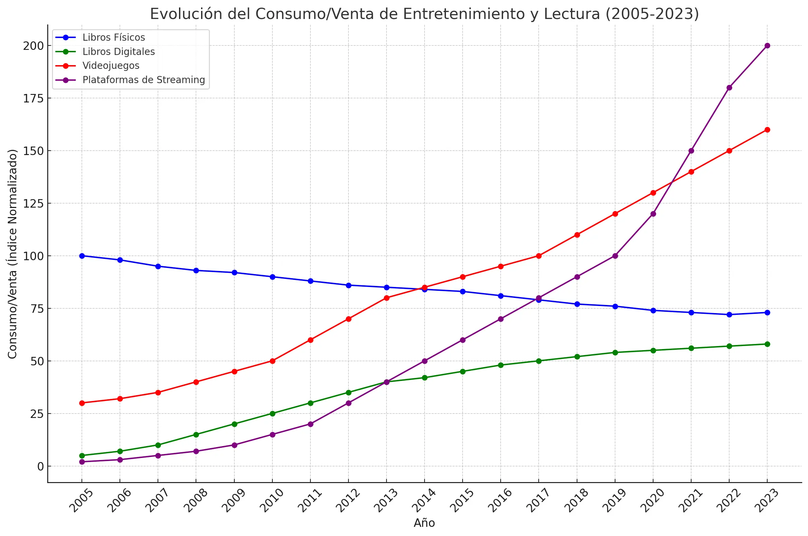
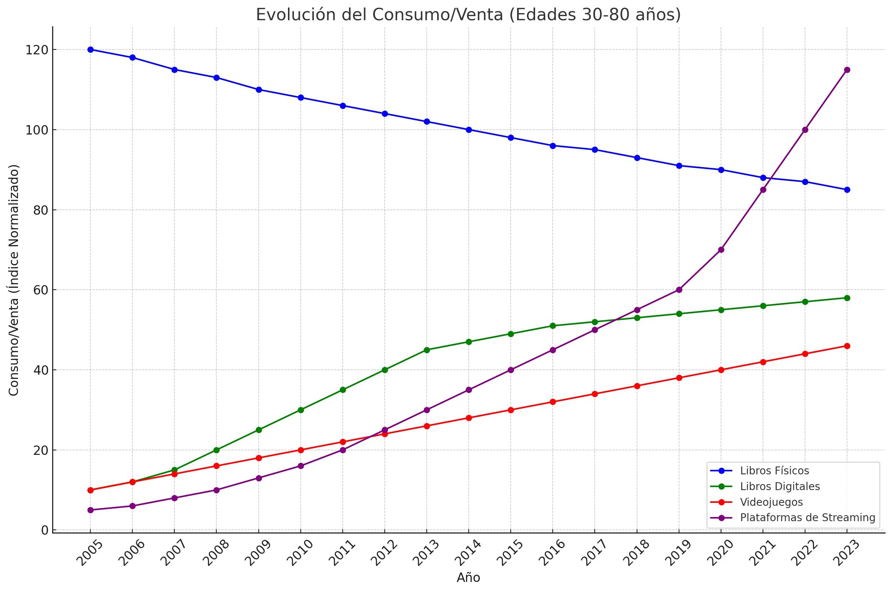
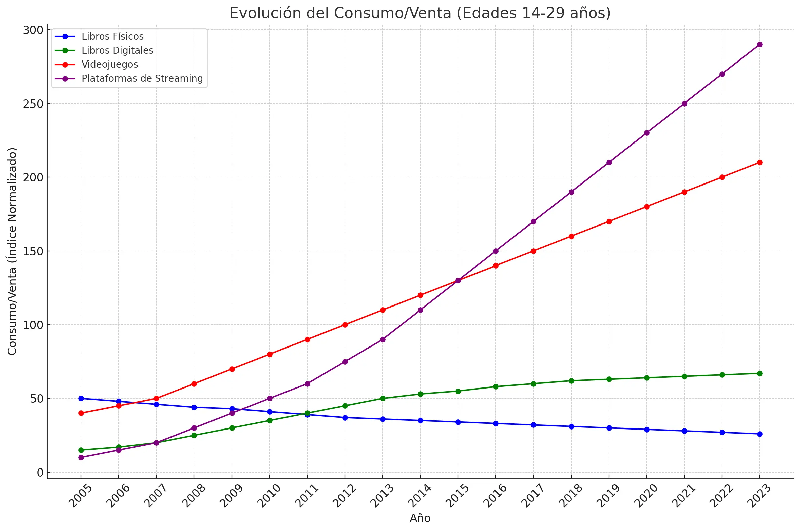
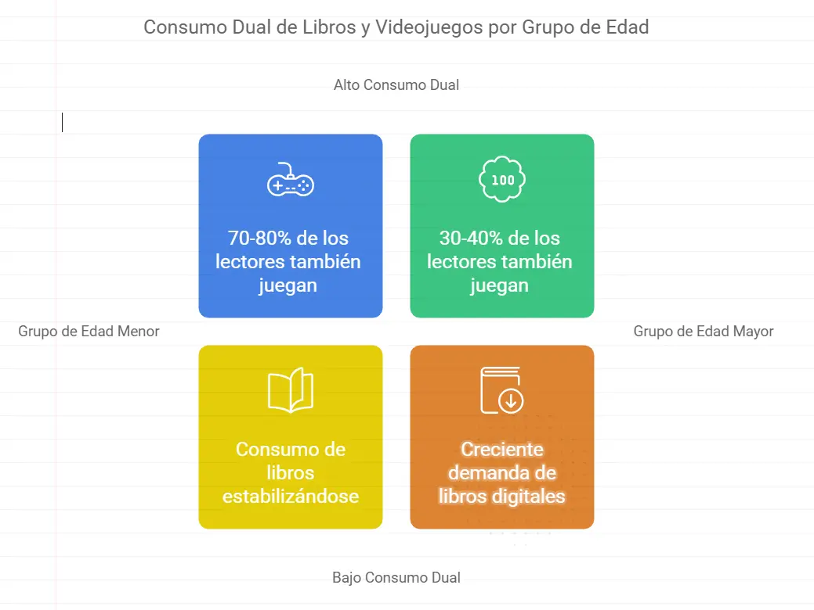

Mercado, Marketing e Ingresos / Introducción
¿Estamos preparados? ¿Hay Mercado?
Con poca imaginación que se tenga, podemos prever por dónde avanzará la IA Generativa. Empezamos a vislumbrar su capacidad de crear novelas, incluso películas con una calidad increíble. Cuanto más desarrollemos la IA, cuanto más aprenda y cuanto mejor la nutramos, más increíble y rápido será el resultado. No van a pasar demasiados años hasta que con un simple prompt seamos capaces de crear nuestro contenido de entretenimiento personalizado en unos segundos, pero… Las personas seguirán leyendo. Sea en la plataforma que sea, pero al ser humano le gusta leer. ¿Cuál es el problema? El acceso a la literatura. Ese importante “primer libro” que engancha a los adolescentes y les convierten en lectores.
Los adolescentes y jóvenes tienen multitud de oferta multimedia, con un consumo más sencillo, más accesible y instantáneo contra el que el Libro no puede competir. Las Estadísticas están ahí. El crecimiento del consumo de los videojuegos y las plataformas de streaming duplican al del libro digital, mientras tanto, el consumo del formato físico cae en picado. Pero veamos el lado positivo: Los jóvenes quieren `leer y quieren vivir historias`. Pero también quieren jugar. Y quieren disfrutar de películas, música y series que “ellos” pueden elegir.

La gráfica que vemos representa el consumo de Libros Físicos, Digitales, Videojuegos y Streaming.
Pero en la gráfica también podemos percibir que, esa “explosión” del consumo de Streaming y Videojuegos no ha afectado en la misma proporción al consumo de literatura. De hecho, puede verse una estabilización de la literatura.
Consumo de Libros, Videojuegos y Streaming por franjas de edades.
Si nos basamos en simulaciones basadas en tendencias generales y conocidas en la industria del entretenimiento y la lectura y nos centramos en las “Edades Críticas” de estos sectores de forma combinada, obtenemos las siguientes Gráficas de Consumo:
Consumo entre 30 y 80 años

Consumo entre 14 y 29 años

Interpretación:
Según los estudios del Pew Research Center y del Entertainment Software Association, existe un alto porcentaje de consumidores combinados de Videojuegos y Libros:
- 14 a 29 años: Entre el 70% y 80% de los lectores también juegan videojuegos.
- 30 a 80 años: Entre el 30% y 40% de los lectores también consumen videojuegos.
En Definitiva, según los gráficos y los datos, el consumo de libros tiende a estabilizarse, siendo creciente la demanda de libros digitales en edades superiores a 30 años. Y por otro lado, en edades menores de 30, existe un alto porcentaje de jóvenes consumidores de libros.

Conclusión:
EL Selbook es un producto multi-formato, capaz de potenciar el consumo de literatura gracias a combinar elementos muy atractivos para usuarios de videojuegos y streaming.
No se trata de “pelearse contra el Videojuego y el Streaming”, se trata de tentar y retener a sus consumidores a adquirir un producto alineado con ellos y sus preferencias.